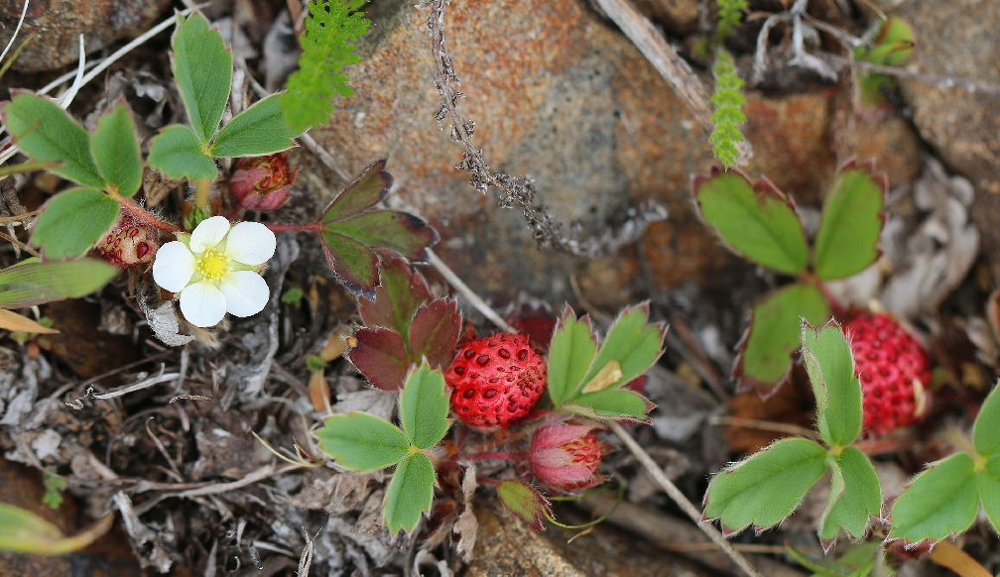
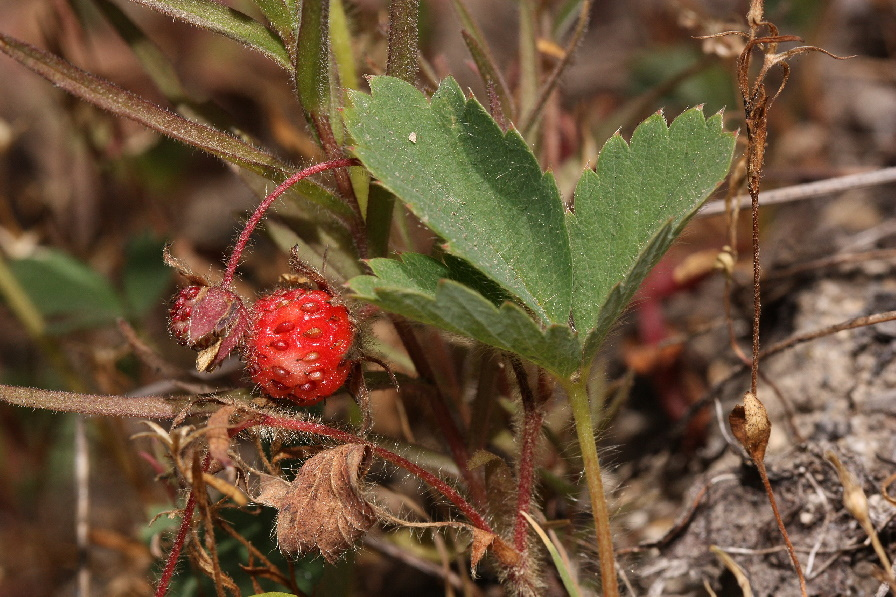

The strawberry that most of us think of when we think of a strawberry is the Garden Strawberry, scientifically named Fragaria x Ananassa. But there are many different types of strawberries in the wild, and the Garden Strawberry was bred as recently as the 18th Century! We have the French to thank for that. A French spy, Amédée-François Frézier, brought a species of strawberry back from Chile in 1714 called the Coastal Strawberry, scientifically named Fragaria Chiloensis. Coincidentally, Frézier's last name actually has origins in the strawberry! In 916 AD, an ancestor of his presented King Charles III with a gift of ripe strawberries. That ancestor was knighted and given the name Frézier in return.
Amédée-François Frézier
In Chile, Frézier saw that the Coastal Strawberry grew large fruit in plentiful quantities. However, when he brought it to France, it initially grew in very small quantities. Unbeknownst to him, the Coastal Strawberry is a unisexual plant, meaning that each plant has only male or female reproductive parts, and he had only brought female plants back from Chile! When placed near other strawberry plants, however, they were able to produce fruit properly, and they began to grow as he had recalled seeing them do in Chile.

Fragaria Chiloensis

Fragaria Virginiana
From there, the Coastal Strawberry was crossbred with a North American variant, the Mountain Strawberry, scientifically named Fragaria Virginiana. This combination of species is what produced the large, plentiful, and sweet Garden Strawberry species that we all know and love today!